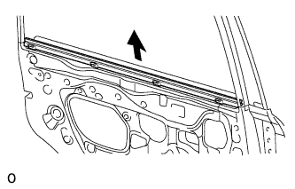
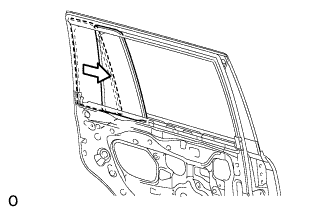
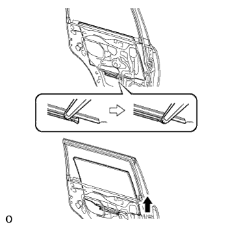
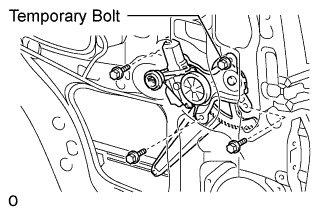

POWER WINDOW REGULATOR MOTOR (for Rear Door) > REMOVAL |
| 1. DISCONNECT CABLE FROM NEGATIVE BATTERY TERMINAL |
| 2. REMOVE REAR DOOR INSIDE HANDLE BEZEL |
 |
Using a screwdriver, detach the 4 claws and remove the bezel.
| 3. REMOVE REAR DOOR ARMREST BASE PANEL ASSEMBLY |
 |
Using a moulding remover, detach the 7 claws.
Disconnect the connector and remove the rear door armrest base panel and rear power window regulator switch assembly.
| 4. REMOVE ASSIST GRIP COVER |
 |
Using a moulding remover, detach the 9 claws and remove the door assist grip cover.
| 5. REMOVE REAR DOOR TRIM BOARD SUB-ASSEMBLY |
 |
Remove the 3 screws.
Remove the 9 clips, 4 claws and trim board.
Disconnect the connector and remove the trim board.
 |
Disconnect the 2 cables from the inside handle.
| 6. REMOVE REAR INNER DOOR GLASS WEATHERSTRIP |
 |
Remove the weatherstrip by pulling it upward in the direction indicated by the arrow.
| 7. REMOVE REAR SPEAKER SET (w/ Rear Speaker) |
Disconnect the speaker connector.

Remove the 3 screws.
Detach the claw and remove the speaker.
| 8. REMOVE REAR DOOR SERVICE HOLE COVER |
 |
Using a clip remover, detach the 6 clamps.
Remove the bolt and disconnect the 2 connectors.
Remove the service hole cover.
| 9. REMOVE REAR DOOR GLASS RUN |
 |
Remove the rear door glass run from the window frame.
| 10. REMOVE REAR DOOR REAR LOWER WINDOW FRAME SUB-ASSEMBLY |
 |
Remove the 2 bolts.
Remove the screw and window frame.
| 11. REMOVE REAR DOOR QUARTER WINDOW GLASS |
 |
Remove the rear door quarter window glass and rear door quarter window weatherstrip as a unit as shown in the illustration.
| 12. REMOVE REAR DOOR GLASS SUB-ASSEMBLY |
 |
Remove the rear door glass sub-assembly from the rear door window regulator sub-assembly as shown in the illustration.
| 13. REMOVE REAR DOOR WINDOW REGULATOR SUB-ASSEMBLY |
 |
Loosen the temporary bolt.
Remove the 3 bolts and regulator.
Remove the temporary bolt from the rear door window regulator sub-assembly.
| 14. REMOVE REAR POWER WINDOW REGULATOR MOTOR ASSEMBLY |
 |
Using a T25 "TORX" driver, remove the 3 screws and motor.